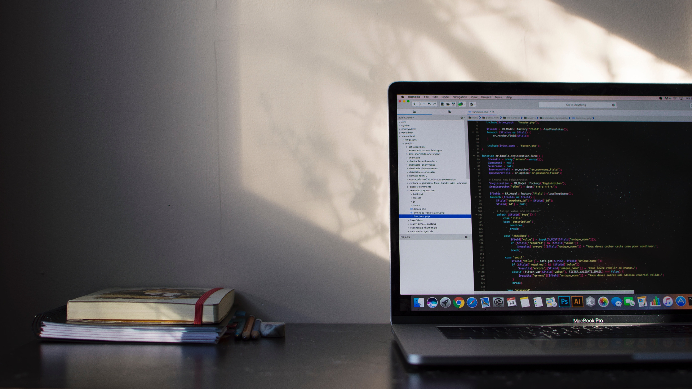

HTML semantik
Header, main, section, figure, dan footer dipakai sesuai fungsi agar struktur lebih jelas dan aksesibel.
Portfolio dasar untuk latihan frontend
WebCraft Studio mempertahankan struktur landing page sederhana dari versi lama, lalu merapikannya dengan HTML semantik, CSS modular, dan JavaScript ringan agar lebih mudah dibaca dan dikembangkan.

Fokus latihan
Bagian ini merangkum arah refactor yang paling penting untuk proyek praktikum web dasar.
Header, main, section, figure, dan footer dipakai sesuai fungsi agar struktur lebih jelas dan aksesibel.
Gaya dasar dipisah dari breakpoint responsive supaya perawatan layout lebih mudah dan tidak bercampur.
JavaScript hanya dipakai untuk interaksi ringan seperti menu mobile, validasi form, dan pengisian tahun otomatis.
Rencana struktur baru
Form validasi ringan
Form ini tidak mengirim data ke backend, tetapi memberi validasi dasar agar project tetap terasa lengkap.